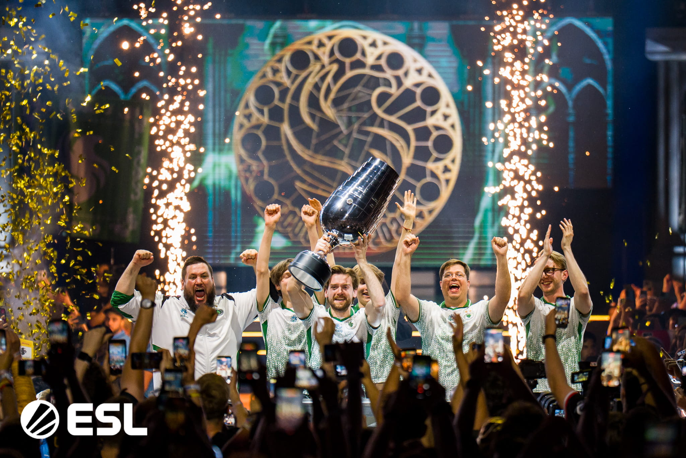

01 / THE CIRCUIT
ONE GAME.
MANY EVENTS.
How Counter-Strike became a professional circuit.

Falcons at the IEM Cologne Major 2026.
Luc Bouchon / ESL. Photo
From player matches to Majors
-
1999 / The game begins
CS starts as a Half-Life mod. Players form teams and organise competitions.
-
2000s / Organisers build the circuit
Events such as CPL, WCG and ESWC grow. IEM starts in 2006.
-
2013 / The CS:GO Major arrives
DreamHack Winter hosts the first CS:GO Major, with a Valve-supported prize pool. Fnatic wins.
Who runs the events?
- Valve: develops the game and sets the Major framework and tournament requirements.
- Organisers: companies such as ESL and BLAST run tournaments.
- Events: Majors exist alongside IEM, ESL Pro League and other series.